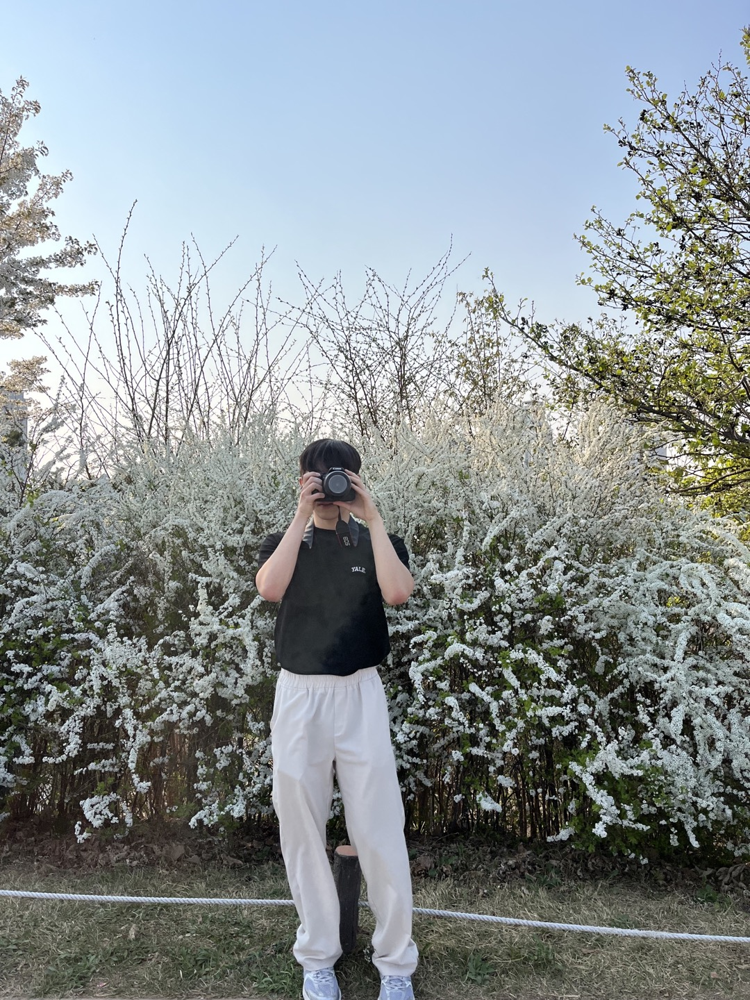
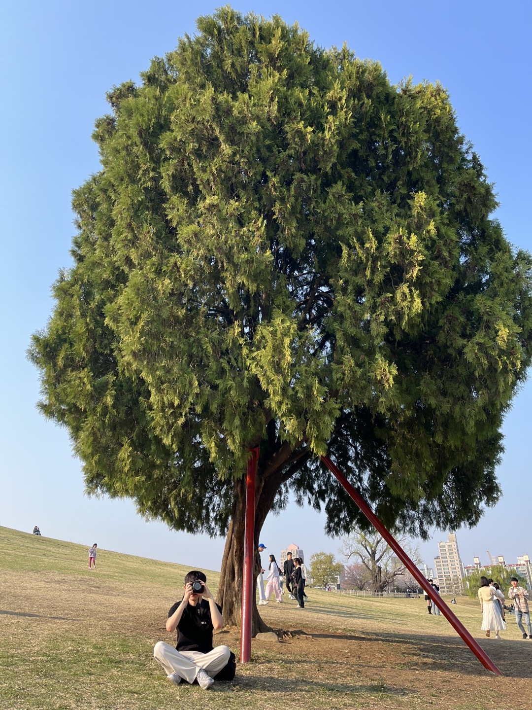
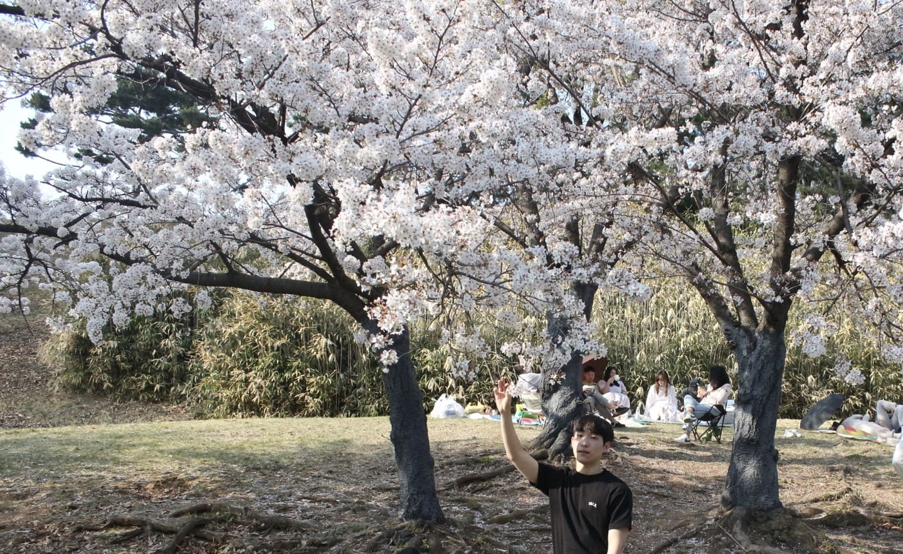
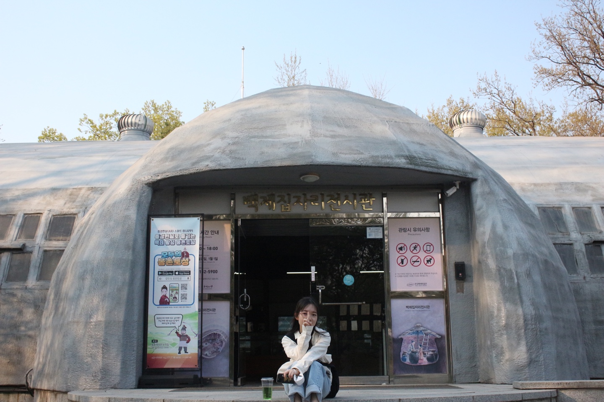
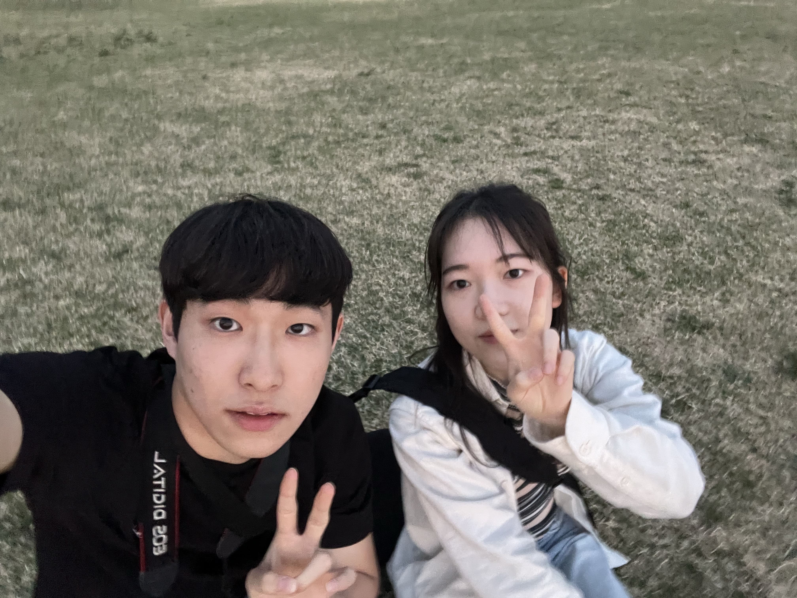
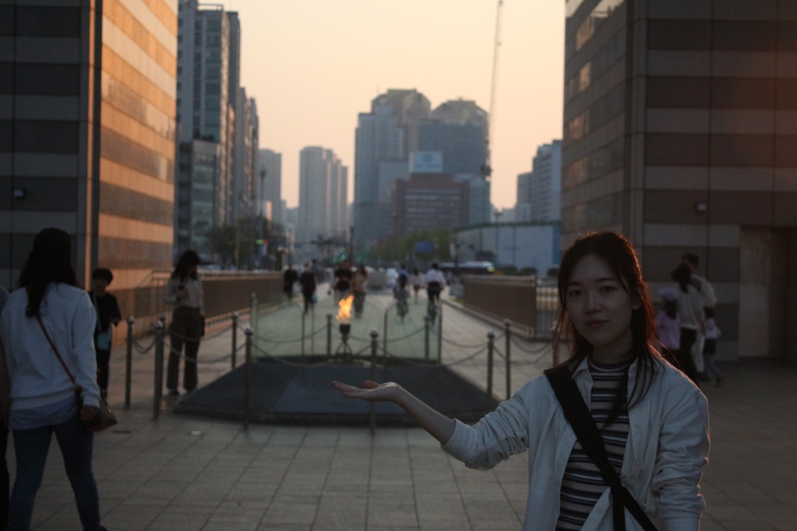
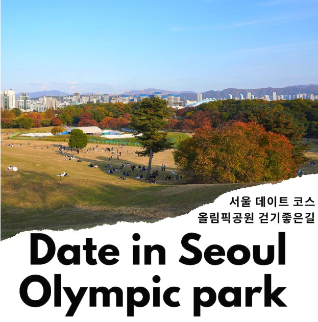
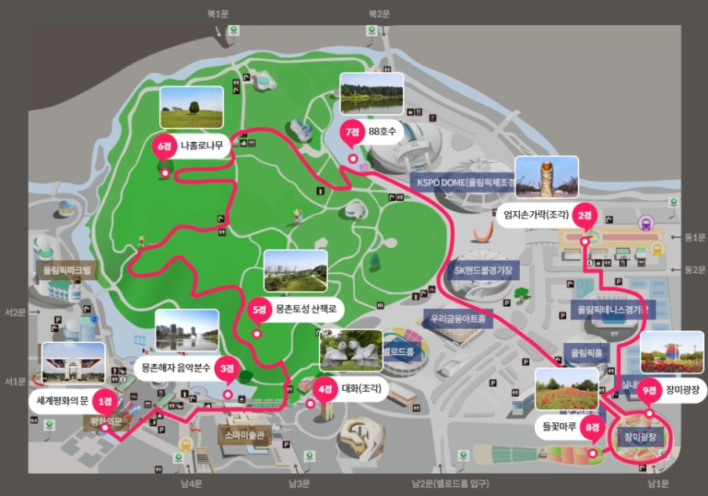

올림픽공원이라면 제일 먼저 떠오르는 "세계평화의 문" 이는 평화를 기원하는 한민족의 얼이 담긴 김중엽 선생의 작품으로, 88년 서울 올림픽 정신을 기리기 위해 설계된 조형물이라고 한다.
올림픽 공원에서 제일 좋아하는 장소로 항상 낮에만 방문했는데 노을 질때 바라보니 감회가 색달랐다. 거대한 크기의 조형물, 그 안에 끝없이 타오르는 불꽃을 바라보며 올해도 내 자신의 목표를 위해 파이팅하자 다짐을 했다.
TODAY 35 | TOTAL 325120
성현이의 자기소개 (*ˊᵕˋo)
Who am I?
소개
불꽃컴공 조성현
취미
운동, 수영, 배드민턴, 코딩♥♥
좌우명
아침이 오지 않는 밤은 없다
인스타
올림픽공원 방문기!
Photo Spot!



오늘의 소감
간만에 간 올림픽 공원 날도 좋고 경치도 좋고 최고의 하루~
TODAY 40 | TOTAL 238254
짝꿍을 소개합니다!_(*ˊᵕˋo)_
Who are U?
소개
불꽃컴공 박수진
취미
노래듣기, 산책, 코딩♥♥
좌우명
이 또한 지나가리라
최애곡
원필 - 행운을 빌어줘!
Photo Spot!



함께 한 20문 20답
1. 첫 인상은?
첫 인상은 기억이 잘 안나는데 두번째 봤을때는 조용하다고 생각했다.
2. 컴공 수업 중 제일 어려운 수업은?
컴퓨터 구조!
3. 대학 졸업 전 이루고 싶은 것은?
혼자 여행다녀오기!
4. 평생 여름으로 살기 VS 평생 겨울로 살기
겨울로 살기!
5. 살면서 제일 행복했던 순간은?
홍콩이랑 마카오 여행 갔을 때!
6. 살면서 제일 후회했던 순간은?
후회되는 일들은 금방 잊는 편이라 딱히 기억에 남는 건 없다.
7. 건국대 최애 음식점은?
시홍쓰!
8. 살면서 제일 감명깊게 본 영화 제목은?
어거스트 러쉬
9. 최근 제일 재밌게 본 드라마?
킹덤!
10. 평생 대학원생으로 살기 VS 대학 10년 다니고 졸업하기
평생 대학원생으로 살기!
11. Mbti?
isfp!
12. 이상형이 어떻게 되나요?
귀여운 사람!
13. 취미생활은?
누워서 쉬기!
14. 최근 즐겨듣는 노래는?
요즘은 콜드 노래를 즐겨듣는 중!
15. 주량이 어떻게 되나요?
소주 반병!
16. 좋아하는 음식은?
한식을 좋아함!
17. 마지막 연애가 언제인가요?
없음 ㅎ!
18. 여행 가보고 싶은 나라는?
독일!
19. 오늘의 소감은?
힘들었지만 재밌었다!
20. 그 이유는?
언덕이 많아서 힘들긴 했지만 날씨도 좋고 올림픽 공원와서 사람 구경도 하고 알록달록한 꽃들과 나무들을 보니 기분전환도 되고 좋았다.
올림픽공원 소개합니다. (*ˊᵕˋo💐o
About OlympicPark
소개
올림픽 공원은 총 43만 평에 달하는 넓은 부지에 자연녹지와 올림픽 시설물들이 조화를 이뤄 사랑 받는 공원
이유1
졸업사진, 나들이 하러 올림픽 공원을 자주가서 좋은 추억이 있는데 처음인 수진이한테 소개해 주고 싶었다.!
이유2
공원 곳곳에 조경도 잘 되어 있고, 볼거리도 많고, 특히 벚꽃이 이쁘게 폈다는 소식을 알게 되어서 ♥♥
이유3
역이 세개가 있어 접근성도 좋고 둘다 걷기가 취미라 걷고 이야기하기 좋은 올림픽 공원을 선정하게 되었습니다.
Miniroom


이렇게 다녀오시는 것 어떠세요?..(*ˊᵕˋo💐o
추천 경로
준비물
멋진 풍경을 담고 싶다면 카메라는 필수!! 주의점 : 경치에 매료되어 시간가는 줄 모른다.!
오시는법
8호선, 9호선을 타고 오시면 1코스를 통해 5호선을 타고 오면 2코스를 이용하게 효과적이다!
추천 코스
올림픽 공원 내에서 가장 아름다운 곳 구경(9개의 장소를 구경한다)를 다 가보면 좋지만 못가실 분들을 위해 두 코스를 나눴다.
1코스
세계평화의문(1경) - 몽촌해자 음악분수(3경) - 대화조각상(4경) - 몽촌토성 산책로(5경) - 장미광장(9경) - 들꽃마루(8경)
2코스
엄지손가락 조각(2경) - 나홀로나무(6경) - 산수유길 - 백제집자리박물관 - 오륜정 팔각정 - 88호수(7경) - 송파둘레길
Miniroom
1코스


세계 평화의 문


몽촌해자
성벽 바깥을 따라 도는 물길을 '해자' 라고 하는데, 일종의 군사방어시설이다.
몽촌해자는 1983년 몽촌토성 외곽을 발굴조사할 때 성벽 아래에서 발견된 흔적을 기초로 만든 인공호수이며 다양한 동식물이 서식하고 있다. 뒤의 올림픽 참여 국기들과 어울려 풍경이 아름답다.
몽촌해자는 1983년 몽촌토성 외곽을 발굴조사할 때 성벽 아래에서 발견된 흔적을 기초로 만든 인공호수이며 다양한 동식물이 서식하고 있다. 뒤의 올림픽 참여 국기들과 어울려 풍경이 아름답다.


몽촌토성 산책로
다음으로는 서울에서 걷기좋은 곳으로 손꼽히는 몽촌토성 산책로이다. 해가 떠 있을때는 산책로를 걸으며 이쁘게 핀 꽃들과 사진을 찍었으며 해질 녘에 다시한번 방문했는데 분위기가 너무 몽환적이라 언덕에 앉아 이런저런 담소를 나누며 20문 20답을 진행했다.
2코스


나홀로 나무
짝꿍이 제일 가보고 싶었던 제 6경 나홀로 나무이다. 영화, 광고, 드라마에서 자주 나와 많은 분들이 알 것 같다. 전부터 왜 나홀로 나무인지 궁금해서 찾아보니 88올림픽을 앞두고 몽촌토성 안에 있던 300여 채의 민가를 철거하는 과정에서 키가 크고 모양이 예쁜 나홀로나무만 남기고 모두 허물어 버렸기 떄문이라고 한다.
푸른 하늘과 넓은 들판, 그리고 나무 한 그루 한 폭의 그림같다.


88호수와 팔각정(오륜정)
88호수는 성내천의 유수지 역할을 하는 인공호수로, 호수 한 쪽에 팔각정이 있어 한 폭의 수채화처럼 아름다운 경관을 연출한다. 특히 팔각정 뒤쪽에 벚꽃이 이쁘게 피어 있어 호수를 배경으로 사진을 찍으면 인생샷을 건질 수 있다.


송파둘레길, 산수유길
산수유길 가다가 발견한 백제집자리박물관 하지만 꽃이 너무 이뻐 입구에서 한 컷! 다음으로 간 산수유길 오늘 본 꽃 들중에서 꽃이 제일 활짝 핀 것 같았다. 걷는 내내 눈이 너무 즐거웠고 풍경에 빠져 걷다보니 송파둘레길까지 가버렸다. 둘레길도 벚꽃으로 가득해서 정말 열심히 걸었던 것 같다. 그렇게 우리는 저녁을 먹으러 갔다.!!!


저녁식사와 인증샷
27300보.. 경치와 날씨가 너무 좋아 쉴새없이 걸었던 거 같다. 저녁으로 수작나베(스키야키)라는 음식점에 갔다. 저녁시간이 조금 지나서 갔는데 사람들이 많아 웨이팅을 섰다. 우리는 밀푀유나베 + 가라야케 + 음료 구성인 나베세트 2인세트 주문했다. 양도 푸짐하고 맛도 맛있어서 놀랐고 나베를 다 먹으면 추가로 우동사리와 죽 까지 제공해줘서 배터지게 맛있게 먹었다. 가격은 2인 세트
기준 38000원이고 직원분들도 친철하셔서 맛있는 한끼였다. 다음에 기회에 되면 또 올것 같다.
기준 38000원이고 직원분들도 친철하셔서 맛있는 한끼였다. 다음에 기회에 되면 또 올것 같다.